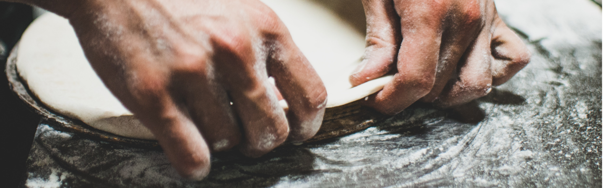
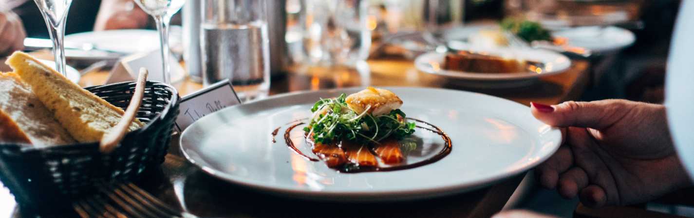

Poznaj nas
bliŻej
Cza Ku Bistro powstało z potrzeby serca, smaku i dążenia do rozszerzenia ciepła domowego na zewnątrz.
W okolicy Psiego Pola brakowało miejsca spotkań w przytulnym otoczeniu, z dobrą kuchnią i relaksującą muzyką.
Żywimy nadzieję, że udało nam się te wszystkie elementy połączyć.
Z nadzieją patrzymy w przyszłość rozpieszczając naszych Gości.
Ania i Jakub

Zobacz nasze
menu

Zarezerwuj
stolik
Cza Ku Bistro to idealne miejsce na rodzinne obiady, kolacja we dwoje oraz spotkania ze znajomymi przy pysznym jedzeniu oraz kawie, winie lub czymś mocniejszym.
Organizujemy spotkania biznesowe oraz tworzymy niezapomniany klimat do świętowania ważnych momentów w życiu bliskich.